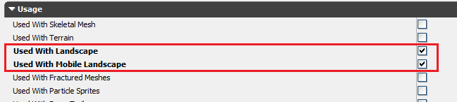
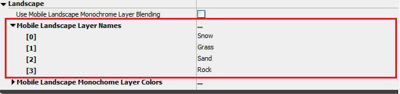
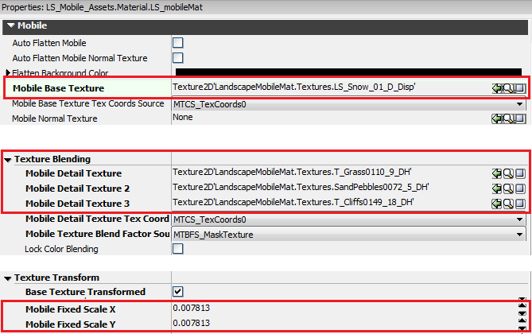
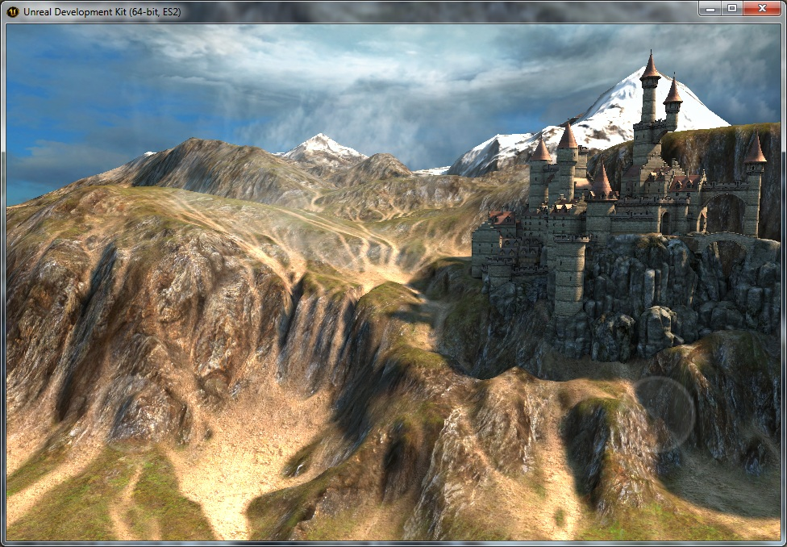
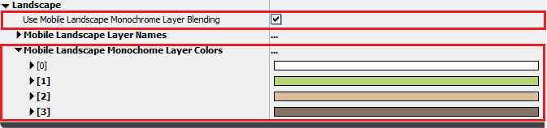

UDN
Search public documentation:
MobileLandscape
日本語訳
中国翻译
한국어
Interested in the Unreal Engine?
Visit the Unreal Technology site.
Looking for jobs and company info?
Check out the Epic games site.
Questions about support via UDN?
Contact the UDN Staff
中国翻译
한국어
Interested in the Unreal Engine?
Visit the Unreal Technology site.
Looking for jobs and company info?
Check out the Epic games site.
Questions about support via UDN?
Contact the UDN Staff
Landscape on Mobile
Overview
Mobile Landscape Materials
Regular Layer Blending
To setup this same material for mobile, first you need to set the material's usage flags correctly. Make sure Use With Landscape and Use With Mobile Landscape are both checked.  Next, you need to specify the textures to use for each layer. The layer textures should be specified in the order they appear in the Landscape Edit mode window. Alternatively, you can list the layers to use in the Mobile Landscape Layer Names property. In this example, the order is Snow, Grass, Sand and Rock.  The first layer is specified in the Mobile Base Texture property. The subsequent layers are specified under the Texture Blending section in the Mobile Detail Texture, Mobile Detail Texture 2 and Mobile Detail Texture 3 slots. Finally you can specify a UV scale for the textures if you desire, under the Texture Transform section.  When you have set up your material, you can press the Emulate Mobile Features button and you should see the layer blending as it will appear on a mobile device. You can also press the Mobile Previewer button which will use the same OpenGL ES 2.0 shaders that will be used on the mobile device. Monochrome Layer Blending
It is also possible to combine the four layer textures into a single texture, with a monochrome version of each texture stored in the R,G,B and A channels respectively. You can then specify four RGB color values to use to colorize each layer before it's blended. For example, you would specify a white color for snow, a green for grass and brown colors for a rock layer. Doing this removes the ability to have a lot of color variation in each layer, but it simplifies the blending as only the weight texture and an single layer texture is used. This can increase performance significantly, especially on low-end devices. To enable this feature, check the Use Mobile Landscape Monochrome Layer Blending checkbox. Then specify the color values for each layer in the Mobile Landscape Monochrome Layer Colors properties:  Finally you need to import your combined layer texture and reference it in the Mobile Base Texture property. The Mobile Detail Texture properties should be blank.Performance and Memory
Component Size
Limiting the number of draw calls, as well as the number of triangles is important for mobile devices. The number of draw calls is determined by the number of Landscape components, and the component size and number of subsections determines the triangle counts and how quickly the LOD transitions occur. We have found that using a landscape of size 1009x1009, with components 126x126 quads (2x2 subsections of 63x63 quads) is a good trade off between triangle count and LOD transitions. For more information on the component size, see the Creating Landscapes page.Mobile LOD Bias
There are two settings that can be used to reduce the number of triangles rendered by landscape on mobile. First is the MobileLodBias property of the Landscape actor. Each increment of this number reduces the size of each component by 1 mip level on all mobile platforms. For example, if you set MobileLodBias=1 for a 2x2 subsection, 63x63 quad landscape, at cook time the top mip data for the heightmap will be discarded, reducing the resolution to that of a 2x2, 31x31 quad landscape. Enabling the Emulate Mobile Features button will show the landscape in the reduced resolution. The second setting is the MobileLandscapeLodBias in BaseSystemSettings.ini. This value works the same as the MobileLodBias property but it is an extra bias performed at runtime based on the particular device. For example, the default bias for an 4th generation iPod Touch device is 1, which means it will use a half-resolution heightmap, quartering the number of triangles rendered when compared to an iPhone 4S. You can adjust these settings as required for your game.- Note that MobileLandscapeLodBias does not reduce the peak memory usage, because the full resolution data is not discarded until the render data is initialized, but it does reduce memory usage once the level is loaded.
Memory Usage
On PC, we use vertex textures to efficiently store the height and normal data and easily calculate the LOD transitions. On mobile, we use fixed vertex and index buffers. Because of this, there is increased memory usage on mobile.| PC | Mobile | |
|---|---|---|
| Position data | 2 bytes per vertex per LOD | 8 bytes per vertex per LOD |
| Normal data | 2 bytes per vertex per LOD | 4 bytes per vertex per LOD |
| Collision data | 4 bytes per vertex | 4 bytes per vertex |
| Layer data (4 layers) | 4 bytes per vertex | 4 bytes per vertex |
Stats
The STAT LANDSCAPE console command will show the triangle and draw call counts for the landscape in view.Limitations
- Rendering of landscape holes is not yet supported.
- LOD is strictly distance based, and components with fixed LOD, or altering the LOD factor is not supported due to fact that only two LOD levels are available to the vertex shader.
- Landscape editing is not possible with the Emulate Mobile Features button pressed. Entering Landscape editing mode will toggle the Emulate Mobile Features button if it's pressed.
- Component sizes larger than 128x128 vertices are not supported, for example 127x127 quads with 2x2 subsections. Larger component sizes would require more than 65536 vertices in a vertex buffer, which will overflow the 16-bit index values. Attempting to use a larger size will cause rendering corruption. In this situation, setting MobileLodBias=1 will solve the problem as it reduces the number of vertices in the component.